In this paper I will describe how to automate Abaqus Finite Element Analyses using python script on example of optimization plain panel from composite material under equal pressure distribution.
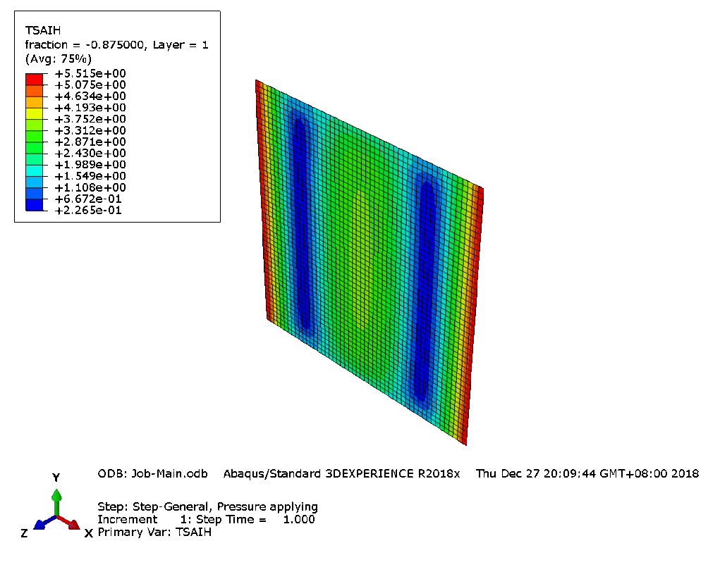
The main point of this whole work is to replace action sequence in GUI by formatted scripts. By default, Abaqus write each and every setups by sequence in a file. This file generated automatically in default working directory and have format of .jnl. This exact file we need to make a script from it, by simply changing it’s format to .py. After processing all steps in GUI we could just this file as a script and it will reprocess all the steps we made manually. Actually, it will already be ‘scripting’. However, a few nuances shall be mention. But I will describe them little bit later. First, I will tell how to run this scrips.
Abaqus software allows to run a scrips in two ways: from GUI and from command line. From GUI it could be run from menu ‘File’ -> ‘Run script’
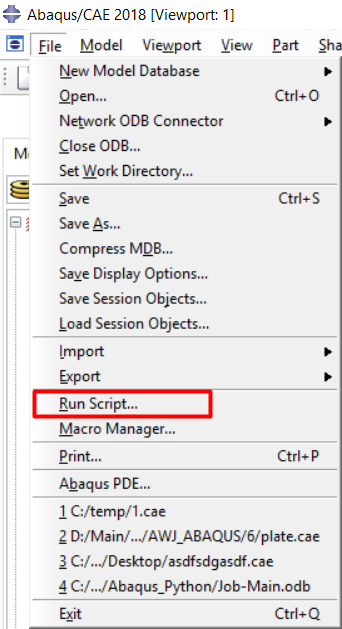
or from command line above:
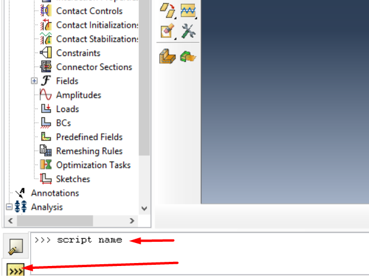
From command line there is to commands to run a script - in GUI and without GUI:
abaqus cae = sctipt_name
abaqus cae noGUI = sctipt_name
The first one will open GUI and then run script there, the second one will run a script without GUI. Which is pretty obvious, whats is not that obvious, is how Abaqus will produce any result from running a script without GUI. And this is first thing about this scripting model. This .jnl file contains sequence of all actions in each steps BEFORE visualization step. So basically, this sequence just setup job for submit and run it. On this step Abaqus will create results and hold it in format of .ODB - Object Database. And to see these results we need to open GUI, import Database and only then results will appears in visualization menu. Or, we need to create one more script for writing results in file format, that could be opened by hands and parsed by python.
One more thing about this .jnl file. It contains sequence of EACH action, that was made in GUI. What does it mean? Let’s take an example. You setup one of geometrical sizes as 54 mm, then you realized it was a mistake and changed in to 45 mm. In .jnl file Abaqus will write not just this size as 45 mm, it will write both actions, and setting this size as 54 mm, and then changing it to 45 mm.
I will describe this method at example of optimization simple plain plate made from composite material. Here is some initial values, such as and materials’ characteristics.
| Tension elastic modulus | Et, GPa | 58 |
|---|---|---|
| Compression elastic modulus | Ec, GPa | 57,8 |
| Transversal elastic modulus | G, GPa | 10,49 |
| Tension critical stress along fiber | Ft1, MPa | 904 |
| Compression critical stress along fiber | Fc1, MPa | 128 |
| Tension critical stress across fiber | Ft2, MPa | 904 |
| Compression critical stress across fiber | Fc2, MPa | 128 |
| Transversal critical stress | F12, MPa | 176 |
| Poisson coefficient | nu_xy | 0,06 |
| Mono-layer thickness | d0, mm | 0,42 |
| Density | po, kg/mm3 | 1335 |
First we should do, is setup all parameters we need to submit this job calculation. This step is actually the same, as if we would to all the job manually. Except now we need to avoid making mistakes. I will not describe step be step all actions in GUI, otherwise this paper will be too long. I will just put some points that shall be noticed. Very first thing we need to do, is to setup a working directory:
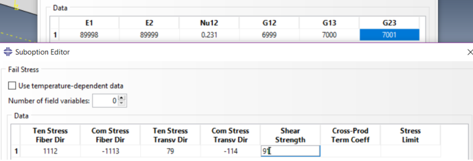
Otherwise, we will have to search job files elsewhere. Only then we can continue.
Against usual isotropic materials, such as metals or concrete, composite material, which this panel made from, contains from several layers and present itself as anisotropy material, so it should be modeling with corresponding method. For material property it is ‘elastic’ -> ‘lamina’, for material applying, it is ‘composite layout’. This is also quite general step, but there is one prompt. Instead of giving correct values, we could write something memorable in order find this function in a generated code.
When creating a composite layer package, it is necessary to take into account that when optimizing the structure, only the number of layers and their orientation will change, and a separate line with parameters is created for each layer group in the script, it makes sense to set a finite number of layer groups. Subsequently, unnecessary layers can be set as fictitious, with a thickness of 0.0001 mm and do not take them into account when analyzing the results. In this case, was exposed to 8 layers that allows to consider the structure [0°, 90°, +-fi°], however, if the range of variation of the angle fi to include the angles 0° and 90°, it is possible to immediately consider the structure [0°, 90°], and when setting layers 0° and 90° as fictitious - [0°, +-fi°] and [90°, +-fi°].
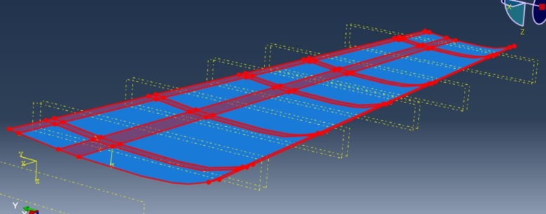
Also, we must explicitly specify the direction for all layers’ axes.
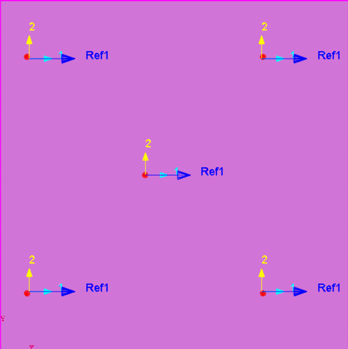
On a step of defined calculation steps we need to chose appropriate result parameter. The less parameters we choose, the less time will take the analyses, which is major for optimization. To see another result parameters, we always could run this script manually after it will be optimized. I chose parameter of TSAIH - which shows assurance coefficient by Tsai-Hill criterion.
In the abaqus logic there are structural elements that ensure proper and correct execution of instructions. These structural elements represent the selected geometric position of the model, such as, surface, edges, points, or sets. They needed to install the interaction between the elements of the Assembly, specifying areas of action of the load or BC. In most cases, they are created automatically during setting of the corresponding parameter (for example, the pressure indication section). But to maintain the correct sequence when generating the script, we must specify them explicitly. In this work, the structural units are next – surface of load applying and set for BC. After this done we need to generate a mesh and submit this job for analyses. On this step Abaqus will stops writing actions sequence in .jnl file.
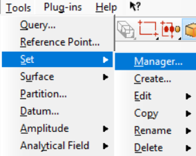
It makes sense to set the boundary conditions by setting all displacements and rotations to 0, because in the future this will give the opportunity to influence the boundary conditions from the script.
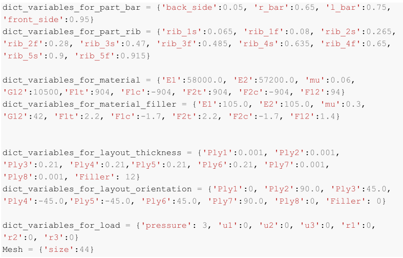
After this done we need to generate a mesh and submit this job for analyses. On this step Abaqus will stops writing actions sequence in .jnl file.
Generally, using GUI after submitting job for analyses we wait until it’s done, and then go to ‘visualization’ page to see results. But what actually happens after we submit the job? While calculating Abaqus generate a .Odb - Object DataBase file where it writes all calculation data. It will save it in working directory and open automatically after calculation is done. So if we create a script, run it with or without GUI, Abaqus will create this .Odb and save it to working dir. And to see the results, we need to go to ‘visualization’ page and import this .Odb file. This is not an appropriate way to analyze calculation results, if we need to optimize something.
So next step we need to do, is to create another script for saving results from analyses. We will go to ‘visualization’ page and setup report output in menu ‘Report Field Output’
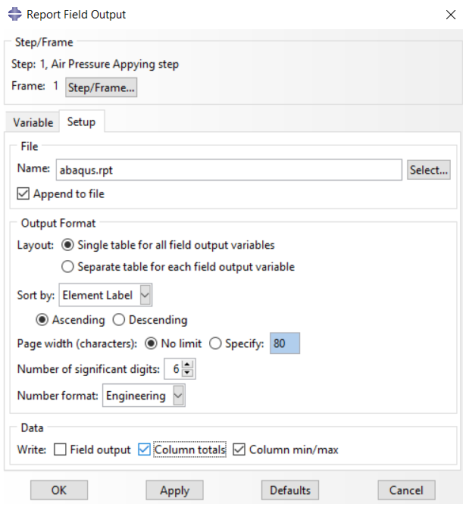
It will create a file with .rpt format, which is text format, so it will be easy to open this file using python for parsing result data. In a ‘file’ section we need to point ‘Append to file’. Without this mark Abaqus will rewrite this file after each calculation, which is fine because we will pars this file also after each calculation, but it is better to append this file so we can open it any time after. And the last section of ‘Data’, we should chose ‘Column totals’ and ‘Column max/min’, we do not need data per each composite layers right now.
For a visual analysis of the results, the model image ahsll be generated with the selection of loaded zones, as well as the legend, from the menu bar File –> print
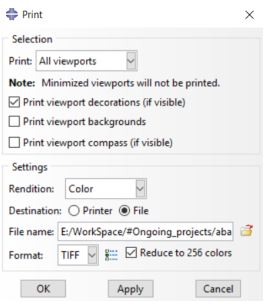
After it’s done, we need to setup image creation. Firstly, it is fun and we could make gifs from them, but mostly this image will indicate that our job has finished and we can parse result file and modify initial data for the next simulation These actions Abaqus will save in Abaqus.rpy file. At this step our job with Abaqus GUI has done, and we could go on for a next step.
As it was wrote above, sequence of all actions processed to submit job for calculations Abaqus saves in job_name.jnl file in working directory, and sequence of all actions in ‘visualization’ menu Abaqus saves in Abaqus.rpy file, but this one will saved not in working, but in Abaqus temporary directory.
Both of these files are scripts, after resaving them in the format .py. After that, these scripts can be called from the GUI, and from the command line (see Fragment 1)
This stage is the most time-consuming. Since the code was generated automatically, there are no comments or explanations. However, it is necessary to disassemble each line to understand what it does. The main task of this step is to replace all input values with references of variables and place them at the beginning of the file
dict_variables_for_material = {'E1':58000.0, 'E2':57200.0, 'mu':0.06,
'G12':10500,'F1t':904, 'F1c':-904, 'F2t':904, 'F2c':-904, 'F12':94}
dict_variables_for_layout_thickness = {'Ply1':0.001, 'Ply2':0.001,
'Ply3':0.21, 'Ply4':0.21,'Ply5':0.21, 'Ply6':0.21, 'Ply7':0.001,
'Ply8':0.001, 'Filler': 12}
dict_variables_for_layout_orientation = {'Ply1':0, 'Ply2':90.0, 'Ply3':45.0,
'Ply4':-45.0,'Ply5':-45.0, 'Ply6':45.0, 'Ply7':90.0, 'Ply8':0, 'Filler': 0}
dict_variables_for_load = {'pressure': 3, 'u1':0, 'u2':0, 'u3':0, 'r1':0,
'r2':0, 'r3':0}
Mesh = {'size':10}
In this paper, each step of Abaqus work has been replaced by a corresponding function for greater clarity (fragments below). Each function takes a dictionary (python data type) of variables, renames it for short, and passes the value of the dictionary keys as input references. The next step was to search for and replace variables with references.
mdb.models['Model-1'].rootAssembly.seedPartInstance(deviationFactor=0.1,
minSizeFactor=0.1, regions=(
mdb.models['Model-1'].rootAssembly.instances['Master_Geom_surf-1'], ),
size=10.0)
mdb.models['Model-1'].rootAssembly.generateMesh(regions=(
mdb.models['Model-1'].rootAssembly.instances['Master_Geom_surf-1'], ))
This is an example of unformed generated code.
def Generate_mesh (Mesh):
'''
This function will create a mesh with a size = Mesh['size']
'''
# Seed (size variable)
mdb.models['Model-1'].rootAssembly.seedPartInstance(deviationFactor=0.1,
minSizeFactor=0.1, regions=(
mdb.models['Model-1'].rootAssembly.instances['Master_Geom_surf-1'],),
size=Mesh['size'])
# Mesh genetarion
mdb.models['Model-1'].rootAssembly.generateMesh(regions=(
mdb.models['Model-1'].rootAssembly.instances['Master_Geom_surf-1'],))
And this one after formation. As you can see from the fragments above, the command to set the variable size=10 has been replaced by the command to set the variable size = Mesh[‘size’]. Thus, the entire script was formatted. The following script, file with a sequence of actions in the visualization window is easier to formate. In this file only one parameter was needed – n – the number of real iterations. It is required to add it to the name of the created picture (next fragment)
def Generation_tiff(n):
'''
This function will create an image of Viewport in main dir.
And the picture will name 'print(n).tiff', where n - current iteration
'''
file_path = 'e:/WorkSpace/#Ongoing_projects/abaqus_wing_python_optymmization/pannel/'
file_name = 'print'+ str(n)
name = file_path + file_name
# Making a .tiff picture (for function replace frilename='..' + n, where n is number of iteration)
session.printToFile(
fileName=name,
format=TIFF, canvasObjects=(session.viewports['Viewport: 1'], ))
As it was already described above, the presence of the image from corresponding iteration in the file will also be a sign of completion Abaqus operations for python, after the formatting of this file and framing all the steps in the appropriate functions, we must specify the execution of image creating function as the last function.
def Generation_Output():
Generation_viewport_and_setting()
Orientation()
Generation_plot()
Generation_rpt()
Generation_tiff(n)
At this stage, two python files were obtained, with variables placed at the beginning of each document, which, when run by the Abaqus interpreter, will execute written commands.
When formatting has done, we must make sure that the variables at the beginning of the scripts are changed according to the specified optimization functions. To do this, we shall create an executable file that will contain these optimization functions, as well as functions to change the initial parameters. I call it main file.
There are several ways to modify data within a text document using python, the most convenient of which is the third-party json library for python, which provides a wide range of file interactions. But the using external libraries will make it difficult to execute file on other computers, so only Python built-in functions will be used in this work. Python’s built-in functions do not allow you to modify files, in the usual meaning. They allow us to write or overwrite data, and only at the end of the file. Therefore, changing the lines at the beginning of the file is done as follows – we will create a new empty file script.py, entered dictionaries with variables at the begining, and then copied line by line all the lines of the template (Fragment below). Templates are created by simply removing variables from the beginning of the script files.
def Generate_scripts (params = params, n = '1'):
'''This will create a files from templates for Script.py and Output_script.py
It will take a parameters in condition of dicts and
insert them at the start of the files'''
with open('Script.py', 'w') as script, open('Template.py', 'r') as template:
for param in params:
print(param, '=', str(params[param]), end='\n', file=script)
print('\n', file=script)
for line in template:
print(line, end='', file=script)
with open('Output_script.py', 'w') as Output_script:
with open('Output_template.py', 'r') as template_output:
print('n = ', str(n), file=Output_script)
for line in template_output:
print(line, end='', file=Output_script)
return 'Output_script.py'
As can be seen from this function, it takes the params dictionary – which contains 7 dictionaries with variables and the iteration number n.
Optimization of iterative calculation involves changing the initial data in accordance with the final results. This means that at each iteration, we must get the results in a format that python can work with. For this purpose has already been configured the output of the results to a text file. (Figure below)
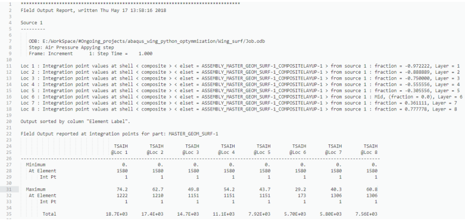
It remains to write a function that will read this file, find the necessary results and convert them into variables. The function that does this is given in the fragment:
def parser_res (res_file='abaqus.rpt'):
'''
Function, that takes a name of result file (abaqus.rpt for default)
and will give a tuple, which is:
1) a dict with all maximum value per ply ----- for ALL iterations
2) maximum value per ply ----- for LAST iteration
output = ({1: max, 2: max, ... }, max)
'''
results = {}
counter = 1 # it will count amount of proc iteration
with open(res_file, 'r') as res:
for line in res:
lstrip = line.lstrip() #delete spaces ' '
if lstrip[0:7] == 'Maximum': #find line with 'Maximum'
tot = lstrip[7:].split(' ') #delete 'Maximum' and convert
for i in range(len(tot)):
if '' in tot: tot.remove('') #delete an empty ('') elements
if '\n' in tot: tot.remove('\n') #delete an ('/n') element if exist
tot = [float(i) for i in tot] #convert from string to list
results[counter] = max(tot)
counter += 1
return results, results[max(results.keys())]
Now a short transcript of what this feature does: Creates an empty dictionary for the results, and a variable counter, opens the results file in read mode, and starts a read loop by lines, in each line doing the following: removes spaces at the beginning and checks whether the line begins with the words ‘Maximum’, if not – goes to next line, and if it starts – works with this line. Removes this word from the beginning of the string, converts the string to a list using spaces as delimiters, removes those elements of the list that are whitespace strings, and removes the newline character, which results in a list of values in the ‘Maximum’string. After that, the function converts each element from the string format to float format (all real numbers) and writes the list to the dictionary with the key (name) of the current iteration counter. After that, the function produces a tuple (an immutable list) as a result, the first element of which is a dictionary with results, the second – the results of the last iteration.
When the scripts generation from variables and templates is configured, the search for results in the results file is configured, in fact, it is enough to write a cycle of successive calls of these functions in the executable file in order to automate the process. But in this project it is necessary to optimize the result by changing the initial parameters.
There are many ways of optimization, their number depends only on engineer imagination. For example, we can set the stability calculation, and change the filler thickness based on the results from stress loss of stability. We can record the results of successive thickness increasing and reinforcement layers (RL) increasing, output the results as a graph with the axes of the resulting strength and mass, and select a point with a minimum mass. But in this project we will change only the number of layers and their orientation. The thickness of the filler is selected as 12 mm. Assume that this parameter is immutable.
The orientation angle optimization looks as follows:
As can be seen from the requirement abowe, it is necessary to implement 2 different iterative systems, one without the condition – the search of the angle regardless from results, and one conditional, the search of thicknesses depending on results. This was implemented 2 functions, conditionals (next code fragment) and unconditional.
def find_opymal_orient (params, angle_range):
global n
for fi in angle_range:
n += 1
print('Set up Ply3 and Ply6 as {}°, and Plyes 4 and 5 as {}°'.format(fi, -fi))
params['Pl_or']['Ply3'] = fi
params['Pl_or']['Ply4'] = -fi
params['Pl_or']['Ply5'] = -fi
params['Pl_or']['Ply6'] = fi
print('Generate scripts')
sctipt_name = Generate_scripts(params, n)
print('Start a calculation in Abaqus')
command = 'abaqus cae noGUI=' + sctipt_name
os.popen (command, 'w') #DELEGATION OPERATION TO ABAQUS
find_or_delay (None, 'Print' + str(n) + '.png')
print('\nCalculation ', n, 'is done\n')
print('THSAI =', '\n', parser_res('abaqus.rpt')[1], '\n')
results = parser_res('abaqus.rpt')[0]
min_THSAI = min(results.values())
iter_num_min_val = find_key_value(results, min_THSAI)
fi_min_val = iter_num_min_val -1
fi_opt = angle_range[fi_min_val]
print('\n', iter_num_min_val, ' -- number of iteration with the smallest value of result')
print('this iteration correspond to angle of ', fi_opt, '\n')
return fi_opt, results, min_THSAI
The function of thickness increasing won’t be given here, because it is not too different from this. However, the full code and the executable file, will be provided in the Application What this feature does in detail:
As you can see from the code of this function, it uses some functions that have not been described before. Such as the dictionary key search function by its value (determining the iteration number with the maximum margin of safety), the delay function or the directory cleaning function. These functions are optional, but they allow us to optimize the executable and the general operations. Hence, some of them will be given below.
The function of the search key by the value is quite simple, it initiates loop through the keys until find u matching between key with the given value and key number of iteration.
The delay function is more interesting, but the main thing is necessary. Because python only delegates a command to abaqus, pyhon logic dictates that it should continue to execute commands immediately after delegation. And the next command in the executable file is to search for results in the file, which may not be created yet during calculation process. To do this, we created a function before to create a picture with the iteration number in the title. Now we will write function to search for this image in the directory, create an artificial delay, update and search again.
def find_or_delay (path, name):
#list_dir = os.listdir(path)
#print('waiting for ', name)
#print('in ', list_dir)
for i in range(500):
list_dir = os.listdir(path)
if name in list_dir:
print ('done in ', i*3, 'sec')
print ()
break
else:
print('·' * (i+1), end='')
print('\r', end='')
print(i, end='')
print('\r\r\r', end='')
time.sleep(3)
#print('time is over, calculation is not done')
Fragment – delay Function
As you can see from the code, it does not work until it find a picture in working directory, it has a limit of 500 iterations, in case something goes wrong, and the image in the directory does not appear. Also, this function implements the status bar – sequential printing of dots (symbol ·) to the terminal, so that the user (engineer) could understand that the function is working and not stuck. Each iteration has a delay of 3 seconds (too many points will print with a delay of 1)
It is best to run the executable file from the terminal, because if you run it from Explorer, it will open the terminal window itself, but immediately close it after the completion of the work, and this window will display the necessary data to be analyzed after job has finished. Here is an image of the console in the last iteration with all messages and the final result.
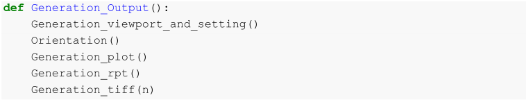
Messages output to the terminal
As you can see from this figure, the following actions were performed in the last iteration:
After 78 iterations, each in 21 seconds, we can calculate that he spent 27 minutes and 18 seconds for whole process. Which, in General, can be considered as successful.